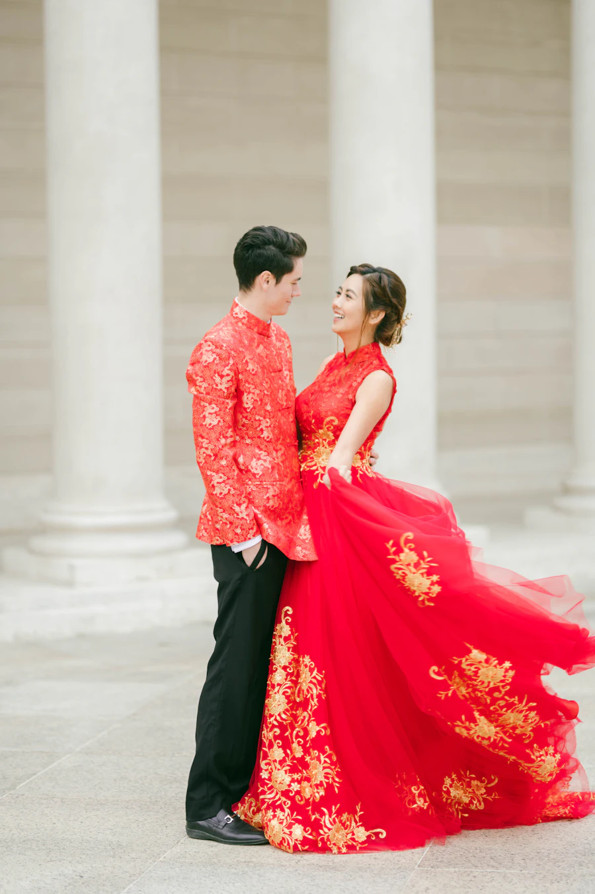
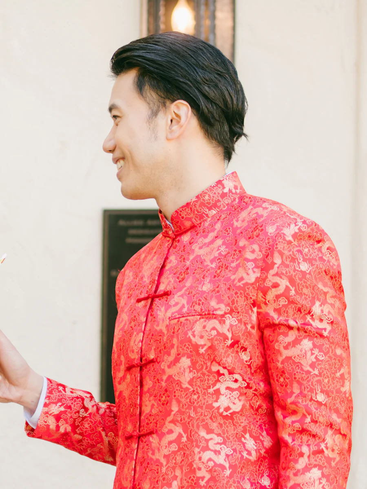
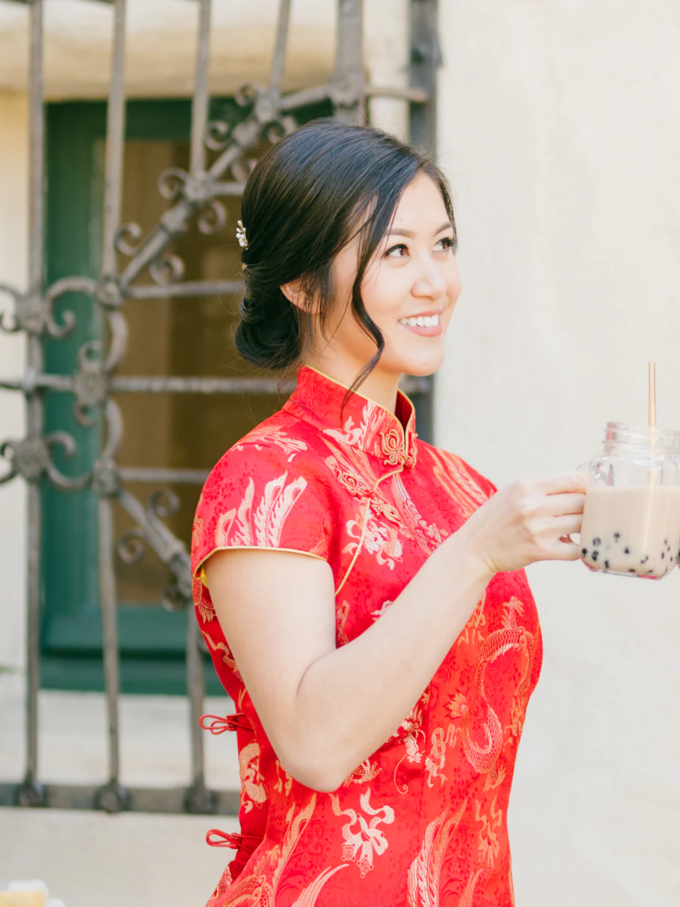
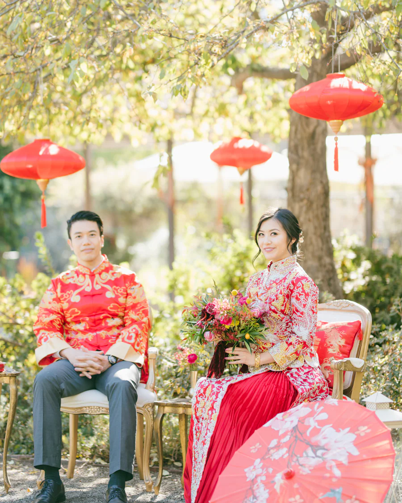

Dress code:
SANGJIT
Memuat undangan
SANGJIT
The Engagement of

Kepada Yth. Bapak/Ibu/Saudara/i
Tamu Undangan
Undangan gagal dimuat.
SANGJIT
The Engagement of
天作之合
TIĀN ZUÒ ZHĪ HÉ
“Pasangan yang ditakdirkan langit.”
Ungkapan kuno ini dipakai untuk dua insan yang dipertemukan bukan oleh kebetulan, melainkan oleh restu Langit. Seperti benang merah yang tak kasatmata, jodoh telah mengikat kami sejak awal, dan kini kami menyatukannya dengan restu kedua keluarga.
THE COUPLE
Dengan penuh sukacita dan atas restu kedua keluarga, kami mengundang Bapak/Ibu/Saudara/i ke acara Sangjit kami:


吉日
Hari baik yang telah dipilih kedua keluarga
Hari bahagia telah tiba. Terima kasih atas doa restunya.
OUR STORY

2019 · Kue Keranjang
Kami pertama kali bertemu di open house Imlek seorang sahabat. Angeline sibuk membagikan kue keranjang, Wilson sibuk mencari alasan untuk terus membantu.
2021 · Secangkir Teh
Kencan pertama kami di sebuah kedai teh kecil di Glodok. Dari secangkir teh melati, obrolan kami tak pernah benar-benar selesai.
2026 · Di Bawah Lampion
Pada malam Cap Go Meh, di bawah ratusan lampion merah, Wilson akhirnya bertanya. Angeline menjawab “ya” bahkan sebelum pertanyaannya selesai.
2027 · Sangjit
Kini, dengan restu kedua keluarga, kami melangkah ke babak berikutnya. Sampai jumpa di hari Sangjit kami.
THE CELEBRATION
ANGPAO
Doa restu Anda adalah hadiah terindah bagi kami. Namun apabila Bapak/Ibu/Saudara/i ingin memberikan tanda kasih, angpao dapat dikirim melalui rekening berikut.
a.n.
OUR MOMENTS
Dress code: